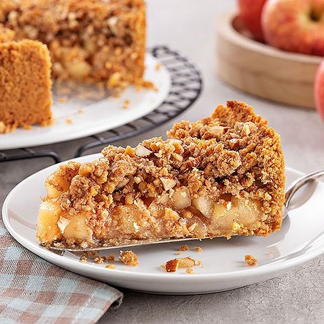

Descubra como fazer um crumble de maçã quentinho, aromático e com aquela cobertura crocante irresistível. Essa sobremesa clássica combina o sabor delicado das maçãs caramelizadas com uma farofinha amanteigada deliciosa. Fácil de preparar e perfeita para dias mais frios ou momentos aconchegantes, o crumble pode ser servido sozinho ou acompanhado de sorvete, criando uma combinação incrível de texturas e sabores que encanta a cada colherada.

Médio
40min
Projeto para fins
acadêmicos, feito
com amor pela aluna
Lívia Faccin
Copyright © 2026 Sweet Bytes